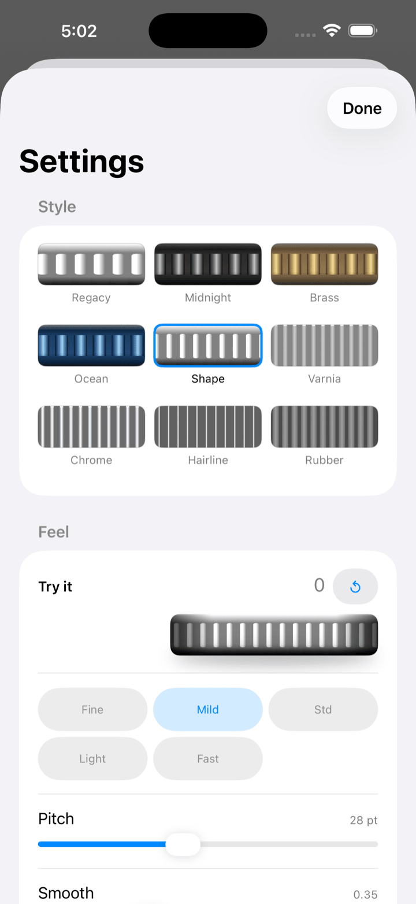
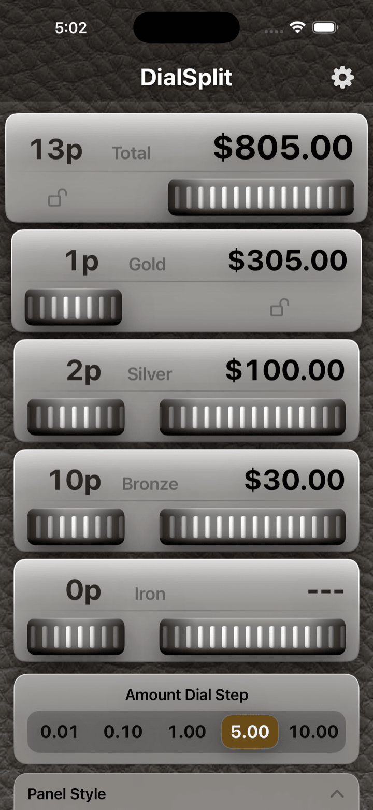

DialSplit 使用說明
以畫面結構為主軸的圖解指南
DialSplit 讓您透過轉盤調整人數與金額，決定付款分攤
本頁以視覺結構為先，讓您在閱讀文字之前，就能一眼掌握主畫面、鎖定、設定與貨幣顯示
4 個分類
可個別調整 A / B / C / D
2 種鎖定
人數鎖定與全部操作鎖定
對應地區
貨幣顯示會依裝置設定自動調整
主畫面
點按圓點即可開啟該處的說明

參加人數
可確認人數的合計
合計面板鎖定
鎖定人數轉盤，避免意外變動
A 面板
在 A 面板只需指定人數，金額會自動計算
付款總額
請先輸入合計（付款總額）。點按數字即可用數字鍵盤輸入
金額轉盤級距
切換金額轉盤的增減幅度。長按可設定數值
B / C / D 面板
在 B / C / D 面板指定人數與金額，過與不足的金額會分配至 A
面板樣式
自訂此畫面的外觀。不會影響分攤計算
設定
開啟設定畫面
全部操作鎖定
全部鎖定，避免意外變動
點按圓點以外的空白處即可關閉說明
使用流程
1
輸入合計金額
在上方面板轉動轉盤，或點按金額顯示以數字鍵盤輸入
2
設定人數
用左側的轉盤決定 A / B / C / D 各分類的人數
3
調整金額
調整 B / C / D 的金額後，A 的金額會自動更新
4
視需要鎖定
可只固定人數，或固定全部操作以避免誤觸
設定畫面說明
設定畫面
點按圓點即可開啟各項目的作用

預設組合
從預設組合選擇 A/B/C/D 各分類的名稱
轉盤設定
開啟轉盤專用的設定表單，也可微調靈敏度
外觀模式
自動時會依照系統設定
文字大小
自動時會依照系統的較大文字設定。大為標準的 1.5 倍，特大為 2 倍
設定的細節也可在下方的補充截圖確認
依地區語言的貨幣處理
日文 / 日本
¥12,000
轉盤級距範例：1 / 10 / 100 / 500 / 1000
以整數貨幣處理。級距顯示為不含貨幣符號的數值
英文 / 美國
$12.00
轉盤級距範例：0.01 / 0.10 / 1.00 / 5.00 / 10.00
對於小數兩位的貨幣，會以最小貨幣單位為基準保存金額
英文 / 科威特
KWD 1.000
轉盤級距範例：0.001 / 0.010 / 0.100 / 0.500 / 1.000
同樣支援小數三位的貨幣，並確保顯示與內部單位不會產生偏差
畫面截圖補充
進入轉盤設定

從轉盤設定該列可開啟表單，調整操作手感與外觀
外觀模式

可選擇自動、淺色或深色。自動會依照系統外觀
深色顯示

在昏暗環境下可切換為深色顯示，維持清晰易讀
背景變化


背景可在棕色皮革與黑色皮革之間切換。單色也可在同一區塊選擇
版本紀錄
| 版本 | 發布日期 | 開發環境 |
|---|---|---|
| 1.0.0 | 2011/10/4 | 初版發行 — Objective-C, Xcode 4, iOS 4 |
| 1.1.0 | 2012/4/10 | Objective-C, Xcode 4, iOS 5 |
| 1.2.0 | 2017/4/19 | Objective-C, Xcode 8, iOS 10 |
| 2.0.0 | 2026/4/16 | Swift 6 / SwiftUI, Xcode 26, iOS 26 |
| 2.0.1 | 2026/4/17 | 新增支持開發者功能（打賞・廣告） |
| 2.1.0 | 2026/4/22 | 新增人數鎖定、全部操作鎖定、轉盤設定、外觀模式、背景設定、金額轉盤級距設定與依地區語言的貨幣處理 |